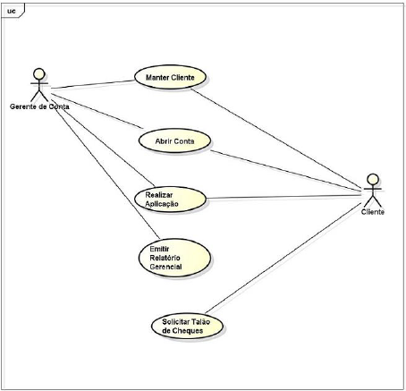

Exercícios
Uma empresa de software está desenvolvendo um aplicativo de gerenciamento de tarefas. Este aplicativo deve permitir que os usuários criem, editem e excluam tarefas, além de definir prazos. Importante destacar que o aplicativo deve ser acessível em diversas plataformas.
Qual dos seguintes é um requisito funcional do aplicativo de gerenciamento de tarefas?
O sistema de biblioteca LibraTech está sendo atualizado para oferecer uma melhor experiência ao usuário. O sistema deve permitir buscas rápidas de livros, ter um tempo de resposta rápido e ser intuitivo para novos usuários. Ademais, precisa assegurar a integridade das informações dos usuários.
Considerando o texto, analise as afirmativas abaixo:
- A capacidade de realizar buscas rápidas de livros é um requisito de negócio.
- A garantia da integridade das informações dos usuários é um requisito não funcional.
- Um sistema intuitivo para novos usuários é um requisito funcional.
Para um aplicativo de rastreamento de atividades físicas, a definição precisa de requisitos não funcionais é crucial. Estes requisitos determinam a qualidade do sistema, influenciando a experiência do usuário.
Qual dos seguintes é um exemplo de requisito não funcional para um aplicativo de rastreamento de atividades físicas?
Uma empresa de logística deseja implementar um novo sistema de gerenciamento de frota. A equipe de TI precisa identificar requisitos específicos para otimizar rotas e monitoramento dos veículos.
Quais stakeholders são cruciais para definir os requisitos de otimização de rotas e monitoramento de veículos?
Stakeholders desempenham um papel crucial na definição de requisitos de sistemas. Suas contribuições são essenciais para moldar a direção e a funcionalidade do sistema.
Qual é a importância dos stakeholders na definição de requisitos de sistemas?
Uma empresa de desenvolvimento de software está criando um aplicativo de e-commerce. Durante a fase de coleta de requisitos, o time precisa entender as expectativas de segurança e usabilidade dos usuários finais.
Quem deve ser priorizado para fornecer requisitos relacionados à segurança e usabilidade do aplicativo?
A análise de requisitos em projetos de sistemas envolve compreender as expectativas de todos os stakeholders. Este processo é vital para alinhar os objetivos do projeto às necessidades do usuário final.
Qual é o foco principal da análise de requisitos em projetos de sistemas?
Em uma empresa de desenvolvimento de software, uma equipe foi encarregada de criar um novo aplicativo de gerenciamento de tarefas. Eles precisam identificar os requisitos do sistema, considerando os interesses dos usuários finais, gerentes de projeto e investidores.
Considerando o texto, analise as afirmativas abaixo:
- I. A identificação correta dos requisitos do sistema é essencial para o sucesso do projeto.
- II. Os usuários finais não têm influência significativa na definição dos requisitos do sistema.
- III. Considerar os requisitos dos investidores é irrelevante no processo de desenvolvimento do sistema. Marque a alternativa correta:
Um hospital está desenvolvendo um sistema para gerenciar informações dos pacientes. O sistema deve armazenar históricos médicos e permitir acesso rápido e seguro por parte dos médicos. A equipe está focada na definição dos requisitos de segurança e acessibilidade.
Considerando o texto, analise as afirmativas abaixo:
- I. O sistema deve garantir a confidencialidade dos históricos médicos.
- II. O sistema não necessita de funcionalidades para registrar históricos médicos.
- III. Acesso rápido e seguro aos dados dos pacientes é uma prioridade.
A equipe de um projeto de software decidiu revisar os requisitos documentados para certificar-se de que estão alinhados com os objetivos do negócio. Esta revisão é uma parte crucial da validação de requisitos, ajudando a prevenir problemas futuros no desenvolvimento e na implementação.
Qual aspecto é crucial para a revisão eficaz dos requisitos documentados em um projeto de software?
Uma equipe está desenvolvendo um sistema de rastreamento de encomendas. Após a validação, percebe-se que o sistema não fornece atualizações em tempo real, um recurso esperado pelos usuários, mas não especificado inicialmente.
Qual deve ser a ação imediata da equipe de desenvolvimento?
Uma equipe de desenvolvimento de software está implementando um sistema de gerenciamento de biblioteca. Durante a validação de requisitos, eles descobrem que o sistema não suporta a classificação de livros por gênero, um requisito não documentado, mas importante para os usuários finais.
Qual é a próxima etapa apropriada para a equipe de desenvolvimento?
Indique se as sentenças abaixo são verdadeiras (V) ou falsas (F) em relação a qualidade de software:
I - O cliente é quem define os critérios de qualidade de seu software, ao encomenda-lo.
II - O uso de métricas permite que possamos identificar melhorias ou problemas em um software.
III - Se um software atinge um alto percentual de venda podemos dizer que ele tem qualidade.
Refletindo sobre a relação entre levantamento de requisitos e qualidade de software, marque a alternativa INCORRETA:
Pressman (2006) atribuiu o alcance da qualidade de software como uma consequência formal no desenvolvimento.
Considerando o que Pressman disse, indique se as colocações abaixo são verdadeiras (V) ou falsas (F) em relação a qualidade de software:
I - Realizar atividades de segurança da qualidade em cada projeto de software.
II - Usar métricas para desenvolver estratégias para a melhoria de processo de software e, como consequência, a qualidade no produto final.
III - Garantir que cada produto de trabalho da engenharia de software exiba alta qualidade em seus relatórios
Vários fatores afetam a percepção da qualidade do desenvolvimento e do software. Assinale abaixo a opção que NÃO afeta a percepção da qualidade.
Não podemos confundir os conceitos e a aplicação dos termos Controle da Qualidade e Garantia da Qualidade.
Indique se falsas (F) ou verdadeiras (V) as afirmativas abaixo em relação a Garantia de Qualidade
I - as atividades são focadas no inicio das fases no ciclo de vida de desenvolvimento de software
II - é orientada à prevenção
III - garante que o resultado de seu trabalho é esperado conforme os requisitos
O _________________ é orientado a produto e está dentro do domínio do controle da qualidade. Marque a opção que melhor complementa a lacuna.
Em relação aos conceitos de requisitos de software, analise os itens a seguir e coloque (V) para a assertiva verdadeira e (F) para a assertiva falsa.
( ) Na definição dos requisitos de software, nem todos os requisitos não funcionais dizem respeito ao sistema de software a ser desenvolvido.
( ) O levantamento de requisitos de software privilegia a visão do desenvolvedor em relação aos requisitos de um produto. Já a análise dos requisitos prioriza a visão que o cliente e os usuários têm dos requisitos de um produto.
( ) Os requisitos de um sistema são descrições dos serviços fornecidos pelo sistema e suas restrições operacionais. O processo de descobrir, analisar, documentar e verificar esses serviços e restrições é denominado engenharia de requisitos.
( ) Gerência de requisitos pode ser conceituada como enfoque sistemático para a elicitação, organização e documentação dos requisitos do sistema e um processo que estabelece e mantém o acordo entre usuários e a equipe de projeto à medida que os requisitos são modificados.
Não podemos confundir os conceitos e a aplicação dos termos Controle da Qualidade e Garantia da Qualidade.
Indique se falsas (F) ou verdadeiras (V) as afirmativas abaixo em relação a Controle de Qualidade
I - as atividades são focadas no inicio das fases no ciclo de vid de desenvolvimento de software
II - é orientado ao processo
III - garante que os resultados de seu trabalho são esperados conforme os requisitos

A partir da figura acima, em relação a execução das atividades é correto afirmar:
i) a tarefa 2 ou a tarefa 3 será executada. Pode ainda ambas serem executadas se atenderem as condições.
ii) a tarefa 2 ou a tarefa 3 será executada. Nunca ambas.
iii) a tarefa 2 e a tarefa 3 serão sempre executadas.
iv) a tarefa 4 pode ser executada duas vezes.
Definir requisitos de sistema demanda um cuidado específico de modo que possamos traduzir claramente as necessidades dos clientes.
Identifique se as características abaixo são falsas (F) ou verdadeiras (V) referente à classificação dos requisitos quanto aos níveis (requisitos de usuários e requisitos de sistema)
I - Os requisitos de sistema definem em linguagem informal o que o sistema deve atender.
II - O leitor dos requisitos de usuário devem ter algum conhecimento técnico em TI.
III - Os requisitos de usuários não falam de restrições do sistema.

A partir da figura acima, em relação a execução das atividades é correto afirmar:
i) a tarefa 4 sempre será executada.
ii) a tarefa 2 ou a tarefa 3 será executada. Nunca ambas.
iii) a tarefa 2 e a tarefa 3 serão sempre executadas.
(ENADE 2014) Conforme a norma ISO 9241, a usabilidade é definida como a capacidade que um sistema interativo de software oferece a usuários, em um contexto específico de operação, para a realização de tarefas de maneira eficaz, eficiente e agradável. Com fundamento nesse conceito, uma empresa deseja medir a satisfação dos consumidores de seus produtos e, para isso, desenvolverá um sistema de software. A equipe de desenvolvimento do sistema de software elencou os requisitos listados abaixo.
Código do Requisito: Descrição do Requisito
RQ1: Cada produto da empresa deverá ser avaliado, por um usuário, com um valor numérico inteiro entre -5 e 5.
RQ2: Cada transação do sistema com o banco de dados para registrar uma avaliação de um pRQ5:roduto deve ser realizada em um tempo inferior a 20 segundos.
RQ3: Cada operação do usuário deverá ser realizada em até três telas.
RQ4: O sistema deve ter intrface com sistemas legados.
RQ5: O usuário consumidor irá identificar-se pelo código do númeo de Cadastro de Pessoa Física.
Entre os requisitos listados acima, o código do que se refere à usabilidade é:
Analise as alternativas abaixo e marque a que NÃO se refere a requisitos de usuários.
Falhas ao longo do ciclo de desenvolvimento do Software são custosas e sempre que identificadas mais cedo, menor impacto causam ao projeto, em termos de custo, prazo e arquitetura. Qual a fase que um BUG detectado causa maior impacto?
Definir requisitos de sistema demanda um cuidado específico de modo que possamos traduzir claramente as necessidades dos clientes.
Identifique se as características abaixo são falsas (F) ou verdadeiras (V) referente à classificação dos requisitos quanto aos níveis (requisitos de usuários e requisitos de sistema)
I - Usamos diagramas intuitivos e simples nos requisitos de usuário.
II - Requisitos de sistema são definidos em estágios iniciais do desenvolvimento do sistema.
III - Podemos ou não usar termos técnicos nos requisitos de sistema.
Quando classificamos os requisitos por níveis, facilitamos a orientação de quem os lerá. Essa classificação compreende os níveis: requisitos de sistemas e requisitos de usuários.
Considerando esta classificação, indique se as afirmativas abaixo são falsas (F) ou verdadeiras (V):
I - Requisitos de usuários são destinados ao pessoal mais técnico.
II - Requisitos de usuários são mais informais do que os requisitos de sistema.
III - Requisitos de usuários são menos abrangentes do que os requisitos de sistema.
Assinale V para as assertivas verdadeiras e F para as falsas:
- ( ) Analista de Processo é o responsável em buscar as melhores oportunidades de negócio, analisar tendências e cria novos produtos. Está preocupado em encontrar novas oportunidades de negócio para empresa.
- ( ) Um processo de negócio é classificado como primário ou externo quando produz resultados imperceptíveis para o cliente externo, mas são importantes para a gestão efetiva do negócio.
- ( ) Objetivo, evento, atividade, regras, atores correspondem a elementos de um processo.
- ( ) Correspondem a desvantagens de uma estrutura organizacional por função: fluxo da informação é truncado, processo não tem um líder, a sequência de operações não pode ser reorganizadas facilmente, o departamento se preocupa apenas com as atividades sobre sua responsabilidade sem a visão dos processos nos quais suas atividades se inserem e cada empregado só conhece e é responsável por sua atividade.
- ( ) Em um trabalho de modelagem de negócio, primeiro deve ser definida de uma melhor forma a estrutura organizacional, onde são estabelecidos os gerent es funcionais, para em seguida fazer uma análise detalhada dos processos.
"São requisitos que se aplicam freqüentemente ao sistema como um todo, indicando restrições sobre os serviços ou funções oferecidos pelo sistema".
Esta definição se refere aos requisitos :
Os requisitos não-funcionais muitas vezes apresentam um cenário de difícil tangibilidade, mas que precisa ser medido. Assinale a assertiva que contém uma métrica para a velocidade:
Os requisitos não funcionais são as qualidades e restrições globais do sistema relacionados com manutenção, uso, desempenho, custo , interface, etc. Baseado nesse contexto, indique a alternativa que apresenta um exemplo de um requisito não funcional.
Requisitos podem ser classificados em funcionais e não-funcionais. Assinale a assertiva que descreve um requisito funcional:
Definir requisitos de sistema demanda um cuidado específico de modo que possamos traduzir claramente as necessidades dos clientes.
Identifique se os requisitos abaixo são funcionais (F) ou não funcionais (NF)
I - O sistema deverá emitir a nota fiscal eletrônica.
II - Deverão ser gerados dois back-ups diários dos arquivos de transações do dia.
III - O sistema deverá ser de fácil uso e aprendizagem.
O que NÃO é definido como requisito não funcional.
Analise o fragmento a seguir: "a base de dados deve ser protegida para acesso apenas de usuários autorizados". O fragmento acima apresenta um exemplo do seguinte requisito:
Em Engenharia de Requisitos, o processo é dividido em estágios, de acordo com a ênfase das atividades executadas, suas metas.
A etapa de elicitação consiste na descoberta de dados sobre o sistema a serem utilizados na definição de requisitos.
Eis, abaixo, algumas técnicas para elicitação de requisitos. Correlacione as colunas:
(1) Engenharia Reversa
(2) Questionários
(3) Reuniões
(4) Observação
(5) Leitura de Documentos
(6) Entrevistas
( ) facilidade de acesso às fontes de informação, volume de informação.
( ) baixo custo, pouca complexidade da tarefa.
( ) contato direto com os atores, possibilidade de validação imediata.
( ) múltiplas opiniões, criação coletiva.
( ) padronização de perguntas, tratamento estatístico.
( ) disponibilidade de informação (código), reutilização.
O correto está em:
A entrevista também é uma das técnicas de levantamento de requisitos. Tradicionalmente mais simples de utilizar, produz bons resultados na fase inicial de obtenção de dados.
Considerando esse contexto, avalie as seguintes asserções e a relação proposta entre elas.
I - O entrevistador deve fazer perguntas pre-preparadas conforme seu roteiro e anotar as respostas do entrevistado, não permitindo desvios ou assuntos fora de seu roteiro
PORQUE
II - devemos evitar que as entrevistas fiquem longas demais, causando cansaço para o entrevistado, fato que não produziria bons resultados.
A respeito dessas asserções, assinale a opção correta.
Qual das opções a seguir pode ser definida como a principal etapa da engenharia de requisitos, pois é nela que deve-se investigar todas as demandas e solicitações dos stakeholders do sistema a ser desenvolvido ou melhorado?
Entender bem os stakeholders é crucial para o sucesso do projeto, pois são eles que influenciam ou são influenciados pelo sistema. Além disso, o levantamento de requisitos é uma etapa fundamental para garantir que o software atenda às necessidades reais dos usuários.
Ao escolher uma técnica de levantamento de requisitos, qual aspecto deve ser considerado?
Identifique qual o nome da técnica de observação para levantar requisitos, aonde o analista buscar uma familiarização do cliente, seus valores, sua história.
Relacione o grupo de itens:
Grupo 01: 1 - Entrevista 2 - Workshop 3 - Brainstorming 4 - Questionário 5 - Estudo Etnogáfico
Grupo 02:
A - Trata-se de uma técnica de elicitação em grupo usada em uma reunião estruturada. Devem fazer parte do grupo uma equipe de analistas e uma seleção dos stakeholders que melhor representam a organização.
B - Utilizado normalmente em workshops. Seu objetivo é uma apresentação do problema/necessidade a um grupo específico, requerendo assim soluções.
C - É uma análise de componente social das tarefas desempenhadas numa dada organização. É utilizado para desenvolver um entendimento completo e detalhado.
D - Essa técnica é interessante quando temos uma quantidade grande de pessoas para extrair as mesma informações. As questões são dirigidas por escrito aos participantes. São autoaplicáveis pois o próprio informante responde.
E - É uma das técnicas tradicionais mais simples de utilizar e que produz bons resultados na fase inicial de obtenção de dados. É uma discussão do projeto desejado com diferentes grupos de pessoas com pauta de perguntas definidas.
Assinale a alternativa que relaciona corretamente os itens do Grupo 01 x Grupo 02:
O sucesso de um sistema deve-se principalmente ao bom levantamento e descrição dos requisitos.
Considerando esse contexto, avalie as seguintes asserções e a relação proposta entre elas.
I - A primeira etapa a ser cumprida no levantamento de requisitos é a coleta de requisitos
PORQUE
II - os requisitos não são óbvios e não apenas o gerente da área para a qual o sistema dará suporte deverá ser consultado como também todos os stakeholders envolvidos.
A respeito dessas asserções, assinale a opção correta.
A técnica de Join Application Design - JAD, é um técnica destinada a promover cooperação, entendimento e trabalho em grupo entre os usuários desenvolvedores. A mesma possui quatro princípios básicos, EXCETO :
Assinale a opção abaixo que NÃO representa um problema atual em projetos de software
Os requisitos são essenciais para que o software ¿funcione¿ como o Cliente deseja. Assim...
A Especificação de Requisitos de Software é um documento lido por várias pessoas, desde a cúpula administrativa até o pessoal de Tecnologia da Informação. Desta forma, sua elaboração deve ser cuidadosa de modo que todos possam entender o significado de seu conteúdo.
Indique se corretas (C) ou erradas (E) as afirmativas abaixo em relação aos requisitos que descrevem um sistema de Folha de Pagamento.
I - O sistema deverá calcular o valor do IRRF para cada colaborador, conforme regras vigentes.
II - O sistema deverá gerar o salário liquido dos colaboradores subtraindo os descontos dos valores de recebimentos. Os descontos e recebimentos foram descritos anteriormente.
III - O sistema deverá gerar valor de pagamento de férias conforme a lei vigente.
Especifica e lê os requisitos para verificar se estes satisfazem suas necessidades, também especifica as alterações nos requisitos. Conforme descrito em Sommerville (2009), qual é a caracterização deste usuário?
Marque a alternativa correta.
Identifique o profissional que usa requisitos para entender o sistema e os relacionamentos entre suas partes. Marque a alternativa correta:
Um processo de Engenharia de Software é formado por um conjunto de passos de processo parcialmente ordenados, relacionados com artefatos, pessoas, recursos, estruturas organizacionais e restrições, tendo como objetivo produzir e manter os produtos requeridos. Em relação aos conceitos, indique a afirmativa INCORRETA:
O documento de requisito é o documento mais importante para o controle técnico do projeto, segundo Sommerville (2009) este documento define-se como :
Coloque V (Verdadeiro) e F (Falso) para as afirmativas abaixo:
( ) Um sistema que obtem Resultado acima do Esperado é de Qualidade Total
( ) A remoção de Defeitos ocorre em sistemas sem GQS ... Garantia de Qualidade de Sw
( ) Um sistema é dito de Quallidade Total, quando o Defeito < 0
( ) Walkthrough é uma revisão do produto visando a identificação de problemas
( ) PLANEJAR faz parte do Ciclo de Vida de um SI
[CESGRANRIO2012(adaptado)]O processo de engenharia de requisitos engloba todas as atividades necessárias para criar e manter um documento de requisitos do sistema e compreender os elementos de negócio que serão atendidos pelo software a ser desenvolvido, pertencendo a uma sequência lógica de atividades que culminam em um documento de requisitos correto que inclui todas as necessidades do cliente.
O primeiro passo necessário no processo de criação desse documento de requisitos deve ser a(o):
O gerenciamento de requisitos em grandes sistemas envolve o processamento de grandes volumes de informações sobre requisitos, o que exige o uso de apoio automatizado. As ferramentas de software para esse gerenciamento devem ser escolhidas durante a fase de planejamento de gerenciamento de requisitos. As ferramentas de apoio são usadas, principalmente, para:
No processo de engenharia de requisitos, segundo proposta por Sommerville (2011), temos as seguintes atividades referentes à fase de validação dos requisitos:
Indique se as sentenças são falsas (F) ou verdadeiras (V).
I - o estudo de viabilidade.
II - a especificação de requisitos de negócios.
III - a prototipação do sistema.
(ENADE, 2014) No desenvolvimento de um certo produto de software, foi determinado que um dos requisitos do produto seria a exibição de informações em planilhas eletrônicas. Contudo, durante uma reunião de revisão, a equipe do projeto verificou que esse formato são facilitava a interpretação das informações e sugeriu que fosse construído um gráfico, que permitiria a identificação mais rápida de informações importantes.
Diante desse fato, o gerente do projeto deve:
Identifique com V as afirmativas verdadeiras e com F, as falsas.
( ) Os requisitos não funcionais restringem o sistema que está sendo desenvolvido e o processo de desenvolvimento que deve ser usado e estão, frequentemente, relacionados às propriedades emergentes do sistema de modo que se aplicam ao sistema em sua totalidade.
( ) A prototipação não é considerada uma técnica usada para validação de requisitos, pois ocorre na fase final do processo de desenvolvimento, representado a entrega do sistema aos usuários finais e clientes.
( ) Pode-se considerar que a entrada para o estudo de viabilidade consiste em um conjunto preliminar de requisitos de negócios, um esboço da descrição do sistema e como esse sistema pretende apoiar os processos de negócios.
Marque a alternativa que registra a resposta correta, considerando a ordem de cima para baixo.
(2012 - FCC - MPE-AP) Uma vez que um sistema tenha sido instalado e seja usado regularmente, inevitavelmente surgirão novos requisitos que, então, deverão ser avaliados pela gerência de requisitos. Dentre os motivos do surgimento de novos requisitos, considere: I. Após a instalação, o ambiente técnico e de negócios do sistema sempre muda. Como exemplo, um novo hardware pode ser introduzido, pode ser necessário fazer a interface do sistema com outros sistemas, as prioridades do negócio podem mudar etc. II. As pessoas que pagam por um sistema e os usuários desse sistema raramente são os mesmos. Clientes do sistema impõem requisitos devido a restrições orçamentárias e organizacionais, os quais podem entrar em conflito com os requisitos do usuário final, e, após a entrega, novos recursos podem ser adicionados. III. Geralmente, sistemas de grande porte têm uma comunidade de diversos usuários, com diferentes requisitos e prioridades, que podem ser conflitantes ou contraditórios. Está correto o que se afirma em
Em relação a uma padaria, identifique abaixo o único processo que não seria considerado um processo de negócio
Marque a única alternativa incorreta com relação às características do processo de engenharia de requisitos.
Na elicitação de requisitos, para não nos depararmos com os problemas de escopo, compreensão e volatilidade, algumas ações organizadas precisam ser realizadas.
Marque a alternativa que NÃO indica uma destas ações.
Realizar um levantamento de requisitos consistente é uma responsabilidade do analista de sistema, pois representa o ponto de partida de todo processo de desenvolvimento e a principal garantia de sucesso do projeto. Analise as sentenças abaixo e verifique as que descreve práticas que favorecem uma elicitação de requisitos que reflita os anseios dos stakeholders.
I - Utilizar técnicas adequadas para compreender as necessidades e preocupações das partes interessadas e os ambientes no qual elas trabalham ou operam.
II - A identificação de requisitos deve aparecer de forma cíclica durante sessões tanto de levantamento quando de validação, portanto requer uma combinação de técnicas para que seja completa.
III - O analista de sistemas deve utilizar sua experiência prévia em outras empresas, quando do mesmo ramo de negócio do sistema que estiver realizando o levantamento de requisitos, pois assim poderá ganhar tempo nas definições das soluções.
Marque a alternativa correta.
Durante a elicitação de requisitos o analista de sistema busca identificar junto aos stakeholders, frente ao sistema ou produto, alguns pontos fundamentais para entendimento dos procedimentos que o compõe.
Marque a alternativa que NÃO indica um desses pontos.
Na elicitação de requisitos, fala-se em Problemas de Escopo.
Marque a alternativa que descreve o problema.
Na elicitação de requisitos, fala-se em Problemas de volatilidade.
Marque a alternativa que descreve o problema.
A elicitação de requisitos pode ser feita através das ferramentas:
Indique se a sentença é verdadeira (V) ou falsa(F):
I - questionários
II - diagrama de causa e efeito
III - observações
Dentre as alternativas relacionadas abaixo, marque a que NÂO corresponde a uma ATIVIDADE da técnica de Elicitação de Requisitos:
Em um sistema cujo objetivo principal seja emitir guias de cobrança de impostos e fazer o controle de contribuintes, NÃO é um produto inerente ao trabalho de levantamento de requisitos
Requisitos devem ser claros para que todos entendam o que o cliente necessita.
Identifique as sentenças abaixo como verdadeiras (V) ou falsas (F) em relação à definição de requisitos funcionais
I - O sistema deve aceitar dados complementares para complementar o endereço do cliente.
II - O sistema deve fornecer telas apropriadas para cadastramento do cliente.
III - O sistema deve prever relatórios gerenciais para acompanhamento do desempenho de cada vendedor.
A VALIDAÇÃO DE REQUISITOS, UTILIZA-SE DE ALGUMAS PROPRIEDADES NO TOCANTE A DOCUMENTAÇÃO DE REQUISITOS DE SOFTWARE PELA EQUIPE RESPONSÁVEL PELA VALIDAÇÃO. DENTRE OS ELEMENTOS CITADOS ABAIXO QUAL DELES NÃO SE APLICA A ESTE CONCEITO ?
Segundo Ian Sommerville, existe uma série de técnicas de validação de requisitos que podem ser utilizadas em conjunto ou individualmente. São elas:
Identifique qual exemplo de problemas que a validação de requisitos NÃO pode detectar:
Sommerville destaca que "o custo para consertar um problema de requisitos por meio de uma mudança no sistema é geralmente muito maior do que o custo para consertar erros de projetos ou codificação".
Considerando esse contexto, avalie as seguintes asserções e a relação proposta entre elas.
I - A razão para isso é que a ocorrência de mudança dos requisitos normalmente significa que o projeto do sistema deve ser alterado
PORQUE
II - desta forma asseguramos que a implantação do sistema será conforme o esperado.
A respeito dessas asserções, assinale a opção correta.
A testabilidade dos requisitos é uma propriedade que deve ser verificada durante a fase de testes de requisitos.
Por que é essencial que cada requisito seja testável?
Sobre a Classificação de Processos de Negócio, marque a alternativa FALSA.
As sentenças abaixo se referem ao processo de validação de requisitos:
I - A verificação de completeza deve garantir que o documento de requisitos contenha todas as funções e restrições desejadas pelos usuários do sistema.
II - A verificação de consistência deve garantir que o documento de requisitos não contenha restrições ou descrições contraditórias para a mesma função do sistema.
III - A verificação de realismo deve garantir que haja um conjunto de testes que demonstre que o sistema entregue atende a cada requisito especificado.
IV - A verificação de validade deve levar em consideração o orçamento e o prazo para o desenvolvimento do sistema.
Estão corretos:
No processo de gerenciamento de mudança de requisitos são considerados três estágios, apresentado no quadro abaixo. Correlacione as informações Estagio x Objetivos.
Estagio
1 - Análise de problema e especificação de mudanças
2 - Análise de mudança de requisito
3 - Implementação de Mudanças
Objetivo
( ) Decidir a efetivação da mudança.
( ) Efetivar a mudança.
( ) Verificar a validade da mudança.
Marque a alternativa correta, em seguida.
Em relação ao diagrama BPMN é correto afirmar:
i) Um Fluxo de mensagem só pode ser representado entre duas piscinas, não sendo possível um fluxo de mensagem dentro de em uma mesma piscina, mesmo que seja entre raias diferentes.
ii) Um processo pode ser encerrado por um evento de mensagem ou de tempo.
iii) Um evento inicializador de sinal múltiplo indica que o processo pode iniciar a partir de um dos vários possíveis sinais aceitos.
Marque a alternativa que não representa um objetivo para se utilizar Revisão Técnica Formal (RTF), segundo Pressman (2011):
A mudança de requisito pode iniciar após a implantação do sistema pois é possível uma adequação a uma situação não prevista ou uma necessidade nova ou até um requisito não previsto. Sendo assim é preciso que o analista já esteja planejando o gerenciamento de mudança para a partir de um problema identificado possa entregar um requisito revisado. Para isso é preciso passar por um fluxo que compreende de 3 etapas.
Marque a alternativa que identifica corretamente as etapas e na sequencia ordenada da esquerda para a direita.
(2011 - FCC - TRT) Tabelas de rastreamento para relacionar os requisitos identificados a um ou mais aspectos do sistema ou do seu ambiente devem ser desenvolvidas, segundo Pressman, na engenharia de requisitos por meio da função de
Sobre a rastreabilidade de requisitos, marque a alternativa correta.
I - A rastreabilidade dos requisitos é o momento de se determinar as ligações entre os requisitos em si, seus documentos e suas fontes.
II - O rastreamento de requisitos deve levar em conta o projeto, as fontes de origem e as dependências entre os requisitos.
III - O rastreamento é importante uma vez que mudanças nos requisitos podem gerar custos e impactos em todo o sistema.
Segundo Sommerville, o gerenciamento de requisitos é o processo de compreensão e controle das mudanças nos requisitos do sistema. Portanto, o passo inicial está em planejar e definir bem qual será o nível do detalhamento pretendido no gerenciamento de requisitos, e para isso dentre os atributos que devem ser avaliados temos:
Assinale a alternativa correta. De acordo com Mazzola (2010, p. 63), a Análise de Requisitos é uma tarefa que envolve antes de mais nada um trabalho de:
Os diagramas de caso de uso apresentados pela UML (Unified Modelling Language) tem como objetivo a representação dos requisitos de sistema. Muitas simbologias são usadas.
Escolha a alternativa correta que denomina a representação da interação caso de uso - caso de uso que é estabelecida somente quando existe o atendimento de uma regra de negócio.
É correto afirmar: i) Um caso de uso corresponde a um conjunto de interações entre um ator e um sistema de tal forma que ao final desta interação se atinge um resultado mensurável. ii) Na descrição de um caso de uso deve-se, preferencialmente, ser feita em forma de algoritmo para maior precisão da especificação e ainda facilitar a sua implementação. iii) A descrição de um caso de uso pode ser feita de forma expandida e não expandida.
 A partir da figura acima, em relação a execução das atividades é correto afirmar:
A partir da figura acima, em relação a execução das atividades é correto afirmar:
i) a atividade D sempre será executada.
ii) a atividade B ou a atividade C será executada. Nunca ambas.
iii) a atividade B e a atividade C serão sempre executadas.
Para captar os requisitos funcionais de um sistema pode-se utilizar a UML. O diagrama mais adequado para essa finalidade é o diagrama de
(UERJ - 2015) No diagrama de atividade da UML, o elemento que recebe uma transação de entrada e cria dois ou mais fluxos de controle paralelos é:
(UERJ - 2015) Em relação ao diagrama de casos de uso, abaixo, verifica-se que os gerentes de conta podem utilizar, com exclusividade no sistema bancário, a seguinte funcionalidade:

O entendimento e a modelagem dos processos de negócios contribuem para o levantamento adequado dos requisitos de sistemas que darão suporte ao negócio em questão. Quanto aos tipos de processos de negócios, avalie as questões a seguir e indique a alternativa correta.
I - Processos primários ou finalísticos possuem relação direta com os clientes e, quando agrupados, tendem a traduzir a cadeia de valor da organização.
II - Processos de suporte ou apoio colaboram com os processos primários e possuem relacionamento direto com os clientes.
III - Processos de gestão tem como objetivo garantir que os processos por ele gerenciados, atinjam suas metas operacionais, financeiras, regulatórias e legais.
A respeito dos Casos de Uso UML, marque V - Verdadeiro ou F - Falso para cada assertiva a seguir.
Na engenharia de software, os __________ são fundamentais para o desenvolvimento de sistemas eficazes. Eles definem as necessidades e expectativas dos usuários, além de orientar a equipe de desenvolvimento. Um aspecto crucial é a distinção entre requisitos de __________, que são descrições gerais do que os usuários desejam, e requisitos de __________, que detalham especificações técnicas e funcionais do sistema. Essa diferenciação ajuda a garantir que o sistema final atenda tanto às necessidades do usuário quanto às exigências técnicas.
Assinale a alternativa que contém a sequência correta para preencher as lacunas acima: